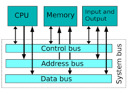
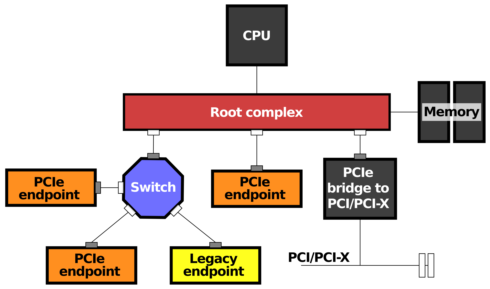
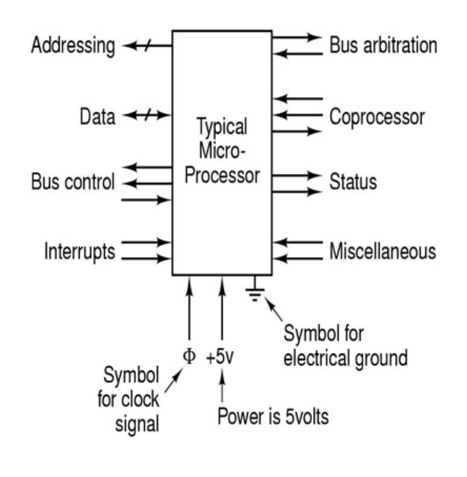
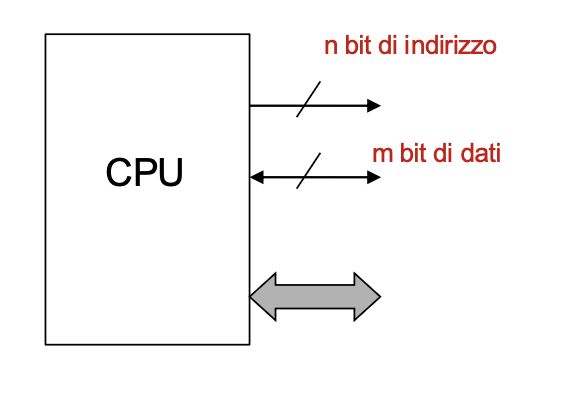
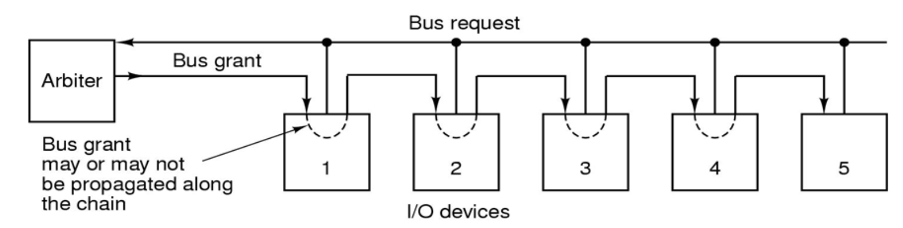
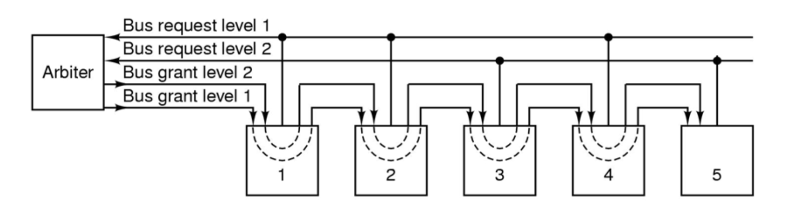
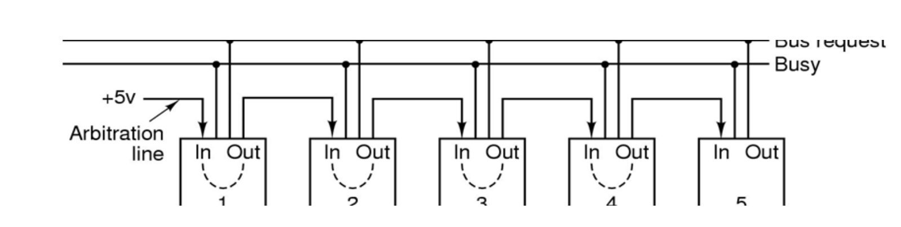
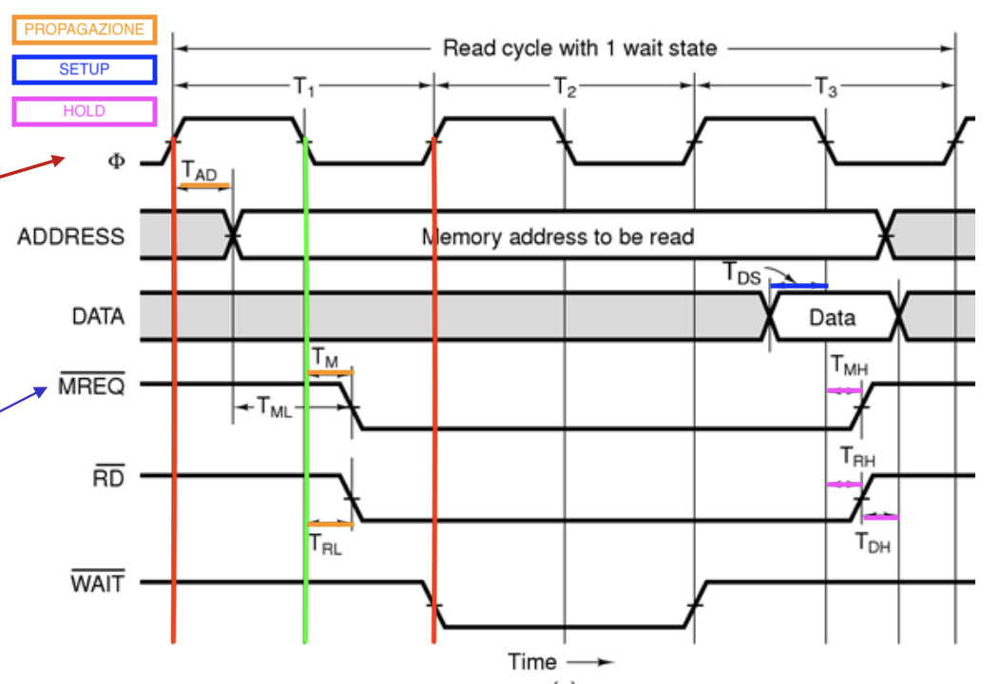
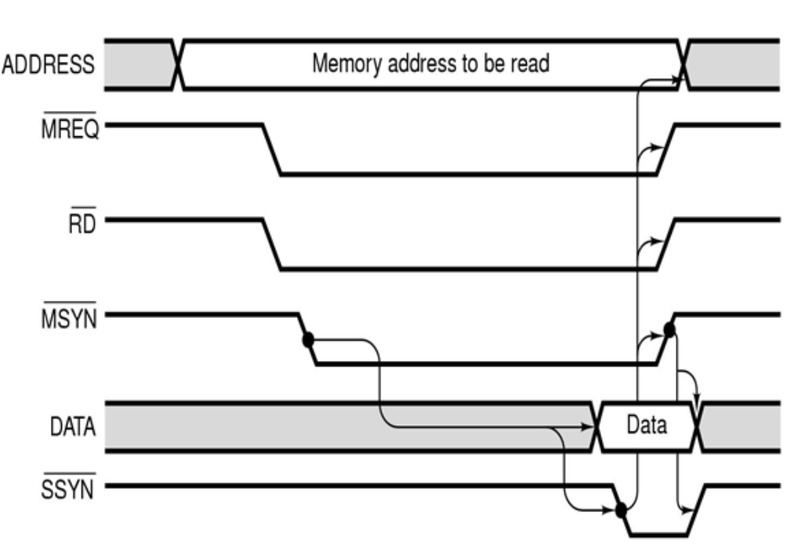

Il Bus di Sistema
Il Sistema Nervoso
L'insieme di linee elettriche che mettono in comunicazione CPU, Memoria e Periferiche di Input/Output. Tutto sulle regole, l'architettura e le temporizzazioni.
I. Il Concetto e l'Evoluzione
Il bus è il sistema nervoso del computer: l'insieme di linee elettriche che mettono in comunicazione CPU, Memoria e Periferiche di Input/Output. Per evitare conflitti, segue regole rigide chiamate protocollo del bus.
1. Architettura Classica vs Moderna
Bus Condiviso (Classico)

Tutti i componenti (CPU, Memoria, Scheda Video, I/O) sono attaccati agli stessi cavi.
Problema: Crea un grosso collo di bottiglia perché un solo dispositivo può usare il bus in un dato momento. Se la CPU parla con la RAM, l'Hard Disk deve aspettare.
Punto-Punto (Moderno)

Le connessioni moderne (come il PCI Express) usano linee dirette tra i singoli moduli.
Soluzione: Elimina il collo di bottiglia e permette molteplici comunicazioni simultanee in parallelo senza rallentarsi a vicenda.
II. L'Anatomia del Bus
1. I Tre Canali Fondamentali
📍 Bus Indirizzi
Serve alla CPU per indicare con chi vuole comunicare. Inserendo un indirizzo, la CPU seleziona la specifica cella di RAM o il dispositivo.
⚙️ Bus di Controllo
Decide cosa fare. Trasporta ordini e segnali come "Leggi" (Read), "Scrivi" (Write), gli Interrupt, il Clock o le richieste di Arbitraggio.
📦 Bus Dati
L'autostrada su cui viaggia il contenuto del messaggio (i bit veri e propri dell'istruzione o del dato da salvare).
2. I Collegamenti della CPU
Come si interfaccia fisicamente il microprocessore col mondo esterno? I suoi pin ("piedini") riflettono esattamente i tre bus appena visti, più le linee per la pura sopravvivenza (Alimentazione e Clock).
n piedini, la CPU genera 2^n combinazioni. Es: un bus indirizzi a 32 bit può accedere a max 4 GB di RAM.

3. Gerarchia dei Dispositivi (Chi comanda?)
III. Le Sfide Costruttive
Progettare un bus significa risolvere tre grandi sfide ingegneristiche fondamentali per le prestazioni dell'intero computer, bilanciando sempre due fattori chiave: Banda e Costo.
3.0 Le Metriche: Banda e Costo
La Banda (Bandwidth)
La banda passante è la quantità massima di dati che può viaggiare sul bus in un secondo (misurata in MB/s o GB/s). È l'obiettivo primario per avere alte prestazioni. Per aumentare la banda, gli ingegneri devono spingere la frequenza del clock al limite, oppure aumentare la larghezza fisica del bus (cioè stendere più cavi per inviare più bit in parallelo).
Il Costo
Non indica solo il prezzo dei materiali, ma il costo spaziale, elettrico e termico. Aumentare il numero di fili significa dover fare connettori più grandi sulla scheda madre. Inoltre, più fili viaggiano vicini ad altissima frequenza, più si creano interferenze elettromagnetiche ("crosstalk") e calore da dissipare, limitando la fattibilità pratica.
3.1 La Larghezza (Width)
La "larghezza" rappresenta il numero fisico di cavi disponibili e ha un impatto enorme sulle prestazioni del sistema. È divisa in due componenti:
- Indirizzi: Determina quanta memoria possiamo installare. (es. 32 cavi = 4GB max).
- Dati: Determina la velocità. Se il bus dati ha 8 linee, trasferisce solo 1 byte alla volta. Per trasferire una Word da 32 bit, servono 4 viaggi separati sprecando moltissimo tempo. Un bus largo (es. 64 bit) trasferisce moltissimi dati in un singolo colpo di clock, annullando il collo di bottiglia!

3.2 L'Arbitraggio
L'arbitraggio risolve un problema cruciale: quando più dispositivi "Master" provano a prendere il controllo dell'autostrada dei dati nello stesso istante, serve coordinamento. Se trasmettessero insieme, i segnali elettrici si sovrapporrebbero creando errori. Vediamo le due filosofie principali.

Esiste un unico chip dedicato a fare da "vigile urbano", chiamato Arbitro. Il metodo classico per distribuire il permesso è a margherita:
- La Richiesta: I dispositivi attivano tutti insieme una linea comune chiamata
Bus Request. - La Concessione: L'arbitro vede la richiesta e fa partire un segnale di via libera sulla linea
Bus Grant. - La Propagazione: Il segnale non va a tutti in parallelo, ma entra nel Dispositivo 1. Se questi voleva il bus, lo blocca e prende il controllo. Altrimenti lo lascia passare al Dispositivo 2.
Evoluzione (Livelli di Priorità): Per evitare che i dispositivi lontani rimangano sempre bloccati, si usano linee multiple di Request/Grant e una linea Acknowledge per confermare che il bus è occupato.


Non esiste un arbitro centrale. I dispositivi si mettono d'accordo da soli monitorando lo stato delle linee comuni. Esistono due soluzioni per implementarlo:
- Soluzione 1 (Poco flessibile): Si usano tante linee quanti sono i dispositivi. Ogni componente osserva le linee degli altri prima di fare la richiesta. Molto costoso e rigido se si vogliono aggiungere nuovi pezzi.
- Soluzione 2 (Ottimizzata): Si usano solo tre linee condivise:
Bus Request,Busy(indica se il bus è occupato) e una singola linea di arbitraggio che attraversa i dispositivi (simile al daisy chain).
3.3 La Temporizzazione (Sincronizzazione)
Il "Bus Clocking" serve a capire a che ritmo far viaggiare i segnali elettrici. Esistono due filosofie costruttive:
A) Il Bus Sincrono (Il Metronomo)
Esiste una linea dedicata che trasmette un'onda quadra continua a frequenza fissa: il Clock. Tutta la comunicazione è divisa in rigidi step temporali (i cicli) e tutti devono andare a questo ritmo.
- T1 (Richiesta): Il Master (CPU) mette l'indirizzo sulle linee e abbassa la linea
RDper richiedere una lettura. - T2 (Attesa): La Memoria è lenta e deve cercare fisicamente il dato nei suoi circuiti. Abbassa a sua volta la linea
WAIT: "Ho capito, ma non ho finito. Aspetta un ciclo". La CPU va in pausa a vuoto. - T3 (Trasferimento): All'inizio di T3, la Memoria sa che il dato è pronto e lo mette sui cavi. Subito rialza la linea
WAIT. La CPU legge il segnale rialzato e capisce: "L'attesa è finita". Al "tic" del clock, fotografa i dati e chiude la transazione rialzandoRD.
Nel diagramma, noterai che i segnali principali hanno una lineetta dritta sopra: MREQ (Memory Request: avvio comunicazione), RD (Read: lettura) e WAIT. Questo indica che funzionano al contrario (Active-Low):
- Per accendere la richiesta (es. "voglio leggere" o "voglio farti aspettare"), il chip abbassa la tensione a 0 Volt (la linea "precipita" in basso).
- Per spegnere la richiesta (es. "fine lettura" o "finito di aspettare"), il chip rialza la tensione a 5 Volt (la linea torna in alto).
Ecco perché nel grafico vediamo WAIT tornare in alto all'inizio del terzo ciclo (T3): la memoria lo rialza per disattivare l'attesa proprio mentre mette il dato sui fili, dando il via libera alla CPU!

🔥 Il Segreto del Fronte di Discesa
Nei corsi base ci insegnano che "tutto scatta in salita". In realtà, il fronte di discesa (metà ciclo) è vitale per due motivi di pura architettura hardware:
- 1. Anticollisione (No Corse Critiche): Dare il comando di lettura prima che la tensione dell'indirizzo sia stabile creerebbe il caos. Attivando il segnale (RD) sul fronte di discesa, la CPU regala al circuito un prezioso mezzo ciclo di respiro per assestarsi perfettamente.
- 2. Clock a Due Fasi (Efficienza Erema): Il tempo si sdoppia. In salita si emettono i dati (es. metto l'indirizzo), in discesa si eseguono i controlli. La CPU impacchetta più azioni nello stesso ciclo senza perdite di tempo!
B) Il Bus Asincrono (L'Handshake)
Nessun metronomo globale. I dispositivi si mettono d'accordo usando una "stretta di mano" (Handshake) passo dopo passo, tramite due segnali: MSYN (Master Sync) e SSYN (Slave Sync).
- Indirizzo: Il Master (es. CPU) mette l'indirizzo sui cavi e aspetta che si stabilizzi.
- Master chiama (MSYN = 1): Il Master alza la bandierina: "Ehi, l'indirizzo è pronto!" e blocca il bus agli altri.
- Slave cerca: Lo Slave (es. RAM) si riconosce e va a prendere il dato richiesto mettendolo sui cavi.
- Slave conferma (SSYN = 1): Lo Slave alza la sua bandierina: "Fatto! Il dato è sui cavi, puoi prenderlo".
- Master chiude (MSYN = 0): Il Master fotografa il dato letto, non ha più bisogno del bus e abbassa MSYN ("Ricevuto").
- Slave si riposa (SSYN = 0): Lo Slave vede che il Master ha finito e abbassa a sua volta SSYN. Il bus torna libero.
